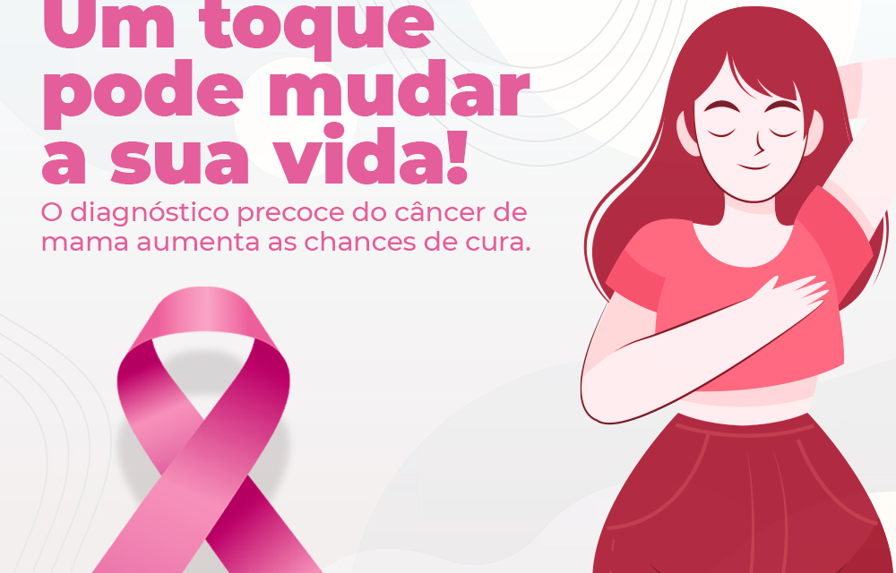

Outubro Rosa: Mês de prevenção do câncer de mama
Outubro Rosa é uma campanha anual realizada mundialmente em outubro, com a intenção de alertar a sociedade sobre o diagnóstico precoce do câncer de mama. Quer entender mais sobre o assunto? Nós separamos alguns tópicos para falarmos mais sobre a prevenção e identificação da doença. Confira e tenha uma boa leitura:
O que é o câncer de mama?
O câncer de mama é um tumor maligno que ataca o tecido mamário e é um dos tipos mais comuns, segundo o Instituto Nacional do Câncer – INCA. Ele se desenvolve quando ocorre uma alteração de apenas alguns trechos das moléculas de DNA, causando uma multiplicação das células anormais que geram o cisto.
Dados também são importantes para citarmos. Você sabia que surgem 1,6 milhões de casos por ano e que são 522 mil mortes por ano por conta do câncer de mama? É a 5ª causa de mortalidade por câncer no mundo. Contudo, com o diagnóstico precoce em sua fase inicial as chances de cura são de 90%.
O diagnóstico precoce do câncer de mama aumenta as chances de cura.
Como identificar a doença?
O sintoma do câncer de mama mais fácil de ser percebido pela mulher é um caroço no seio, acompanhado ou não de dor. A pele da mama pode ficar parecida com uma casca de laranja; também podem aparecer pequenos caroços embaixo do braço. Deve-se lembrar que nem todo caroço é um câncer de mama, por isso é importante consultar um profissional de saúde.
Toda mulher com 40 anos ou mais de idade deve procurar um ambulatório, centro ou posto de saúde para realizar o exame clínico das mamas anualmente, além disso, toda mulher, entre 50 e 69 anos deve fazer pelo menos uma mamografia a cada dois anos. O serviço de saúde deve ser procurado mesmo que não tenha sintomas!
O exame das mamas realizado pela própria mulher, apalpando os seios, ajuda no conhecimento do próprio corpo, entretanto, esse exame não substitui o exame clínico das mamas realizado por um profissional de saúde treinado. Caso a mulher observe alguma alteração deve procurar imediatamente o serviço de saúde mais próximo de sua residência. Mesmo que não encontre nenhuma alteração no auto-exame, as mamas devem ser examinadas uma vez por ano por um profissional de saúde!
Como prevenir a doença?
Não é possível prevenir o câncer em todos os casos, mas existem hábitos que, se incorporados à rotina podem ajudar a reduzir as chances do tumor. Veja a lista de itens apresentados pelo INCA e reforçados pelas campanhas do Outubro Rosa:
Não fumar. Somente o cigarro contem 4.700 substâncias tóxicas e cancerígenas;
Preze por uma alimentação saudável. Isso inclui alimentos de origem vegetal, além de evitar os ultraprocessados;
Mantenha o preso adequado ao seu biotipo. Pessoas acima do peso são mais propensas ao câncer;
Pratique atividades físicas. Faça uma caminhada, aulas de dança e yoga ou inscreva-se em uma academia se gosta de musculação. O importante é fazer algo que lhe dê prazer e a mantenha ativa de forma regular;
Amamente. O leite materno é o alimento ideal para seu filho e o ajudará a se desenvolver menos propenso ao câncer;
Evite a ingestão de bebidas alcoólicas. Elas também aumentam as chances de desenvolvimento do câncer;
O câncer de mama é um assunto importante que deve ser sempre discutido e comentado. Não vire as costas para esse fato que é tão comum na nossa sociedade principalmente entre as mulheres, mas não se restringe ao sexo feminino, homens também podem desenvolver a doença. Por isso, é importante que todos previnam, façam o autoexame e em caso de sintomas procurem um profissional da saúde mastologista.
Faça o auto exame. Previna-se!